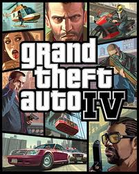

Добро пожаловать на фан сайт GTA IV
Наш сайт посвящен одной из самых лучших игр всех времен, а также лучшей среди игр серии GTA, а если быть точнее, то GTA 4. Игра GTA 4 - это нечто, она объединяет в себе черты гонок, экшена и аркады одновременно. В игре GTA 4 вы можете выбрать одно из множества предоставленного оружия, и постреляться с другими игроками через интернет, либо же выбрать режим гонок, и посоревноваться с другими в умении вождения и хитрости.  GTA 4 - это революция среди игр серии GTA, впервые был использован столь реалистичный движок, когда вы кого-то сбиваете, либо сами попадаете в аварию все выглядит более чем реалистично, к примеру в последней части GTA машины повреждаются реалистично, а не так, как в придыдущих, где бьются только 7-8 частей автомобиля, и то, не реалистично. Также сейчас выходит достаточно огромное количество модификаций, обновлений и всяких разностей, которые сделают игру более интересной и необычной. Если вам надоело играть в стандартную GTA-шку, тогда вперед устанавливать моды на GTA 4. Также в последнее время стали выходить машины для GTA 4 просто в огромном количестве, на любой вкус, практически любой марки и с любой страны. Как по мне, так лучше GTA 4 на протяжении 3-4 лет врядли что-то выйдет, ведь одной из изюминок GTA 4 является мультиплеер с множеством режимов. Правда для этого вам нужно будет приобрести лицензионную GTA 4, но это того стоит, можно отлично проводить время, и, скажу я вам, это очень расслабляет. Цена GTA 4 не такая уж и большая, около 10-12$ (PC), что для игры такого уровня - ничто. Старые версии GTA были тоже ничего, я к примеру и сейчас играю переодически в SA MP (SanAndreasMultiPlayer) - на серверах около 60-250 человек, так что нельзя сказать что все старые гта-шки вымерли, в них и сейчас играют множество людей, возможно даже больше, чем в новую, четвертую часть.Платформы:PS3, XBOX360, PC.
Дата выхода:29 апреля 2008 года PS3 и XBOX 360; 2 декабря 2008 года PC.
Официальный сайт: http://rockstargames.com/iv/
Жанр: Action от третьего лица
Разработчик \ Производство: Rockstar North \ Take-TwoInt
Разработка Rockstar North, время действия игры - 2008 год, место действия - вымышленный город Либерти-Сити, списанный с реального Нью-Йорка(США). Окружение построено на новейшем графическом движке RAGE с применением технологии физики тел Euphoria.
С GTA 4 разработчики вышли на новый уровень построения сюжетов, сделав историю более реалистичной, драматичной, серьезной и обоснованной. Так же, игра стала первой в серии, позволив геймерам выбирать определенные решения в переломных моментах истории. Выбор имеет последствия. Серия GTA одна из самых популярных в мире игр, продажы GTA IV вообще побили все рекорды, несмотря на то, что игра вначале вышла на XBOX 360 и PS3, а только потом на PC, Grand Theft Auto 4, разошлась тиражом в 22 млн экземпляров.Порадовал и мультиплеер, в игре неплоха поднята русская тема. Журнал "Игромания" поставил игре оценку 10/10 баллов, назвав её идеалом.
Впервые, Rockstar применили к Grand Theft Auto загружаемый дополнительный контент, получивший название Episodes from Liberty City. Изначально было объявлено, что это эксклюзивный материал для Xbox, но позже две дополнительных игры портировали на остальные платформы. Эпизоды проходят в том же городе, Либерти-Сити, имеют пересекающиеся сюжетные линии, персонажей и миссии.
Карта в GTA IV
ПОСМОТРЕТЬ КАРТУВсего на карте 3 больших острова, 1 остров среднего размера и 3 маленьких острова.
Т.к. GTA IV прототип Нью-Йорка(названный здесь Liberty city), то сдесь есть и манхеттен (средний остров) и статуя свободы
(сдесь называется статуя счастья и держащая в руке кофе заместо факела).Каждый из них представляет собой маленькую самобытную страну, со своими жителями, правилами и достопримечательностями.
Ну территория тут коечно довольно большая, (но меньше чем в GTA SAN ANDREAS ) чтобы проехать на машине все 3 больших острова понадобится немало времени, однако пролететь на вертолете все три острова займёт не больше пяти минут.
Оружие в GTA IV
С оружием в игре обстоит не очень. Оружия в GTA IV не так много как в GTA SAN ANDREAS, всего по два вооружиние на вид:
Холодное оружие: бита и нож.
пистолеты: два пистолета.
Дробовики: два дробовика.
SMG: две штуки (про миниузи разработчики не забыли).
Штурмовые винтовки: две штуки(калаш в том числе).
Метательные: коктейль молотова и граната.
И ещё нас ждёт: гранатомет РПГ-7.
Вобщем как видите самый классический набор, очень жалко кочечно что бензопилы не было, её нам та как раз не хватало. ПОДРОБНЕЕ ОБ ОРУЖИИ
Главный герой GTA IV
Главный герой GTA IV Нико Беллик приехавший из Восточной европы, хотевший начать новую жизнь в Америке.Можно сказать, что вся философия и смысл игры вращается вокруг этого человека, его взглядов на жизнь и того, что он видит через призму своего менталитета, волею случая оказавшись на этой земле. Здесь в Liberty city живёт его кузен Роман, от вас будет зависить умрёт ли Роман в конце игры, или останется в живых.
Мультиплеер
- Максимальное количество игроков - 16,но каждый режим имеет свои ограничения.- Вам будут доступны различные настройки сетевой игры: погода, оружие, количество пешеходов, активность/наличие полиции.
- Своего персонажа вы также сможете настроить: пол, цвет кожи/волос, стиль одежды и другие приятности, которые делают игру еще более разнообразной .
Диск
Как было написано выше игра продаётся на платформах XBOX 360 , PS3 , PC. Также её можно купить (PC) в интернет магазине STEAM.